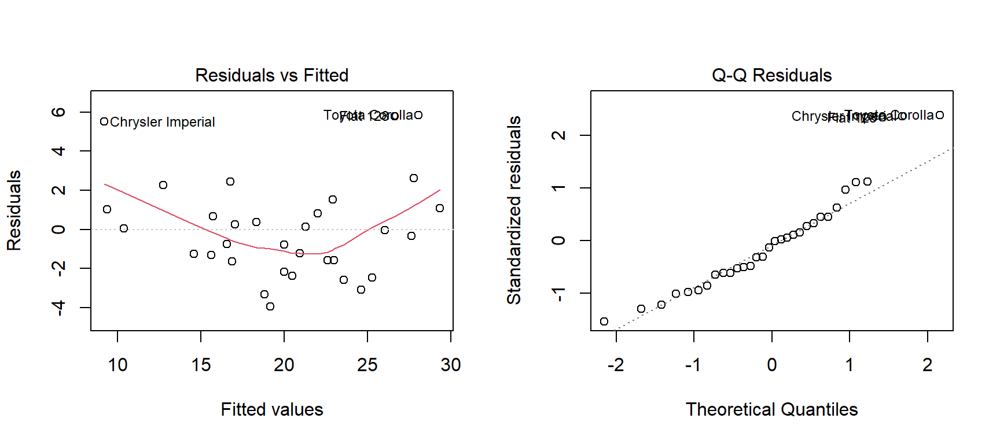

Multiple Linear Regression with R: A Step-by-Step Guide
Understanding, fitting, checking, and interpreting a model
A practical guide to multiple linear regression in R, covering model estimation, diagnostics, prediction, and interpretation.
Regression
R
Statistical Modeling
Author
Statistics Campus
Published
November 15, 2026
1 What will you learn?
Multiple linear regression examines how a numerical outcome is associated with two or more predictors. By the end of this tutorial, you should be able to fit a regression model in R, interpret its coefficients, distinguish R-squared from adjusted R-squared, and inspect important model assumptions.
Prerequisites: Basic descriptive statistics, scatterplots, correlation, and introductory hypothesis testing. This tutorial is intended for students in approximately their third semester.
2 Research question and dataset
We ask: How is fuel efficiency associated with a car’s weight and engine horsepower? We use mtcars, a small example dataset included with R. The outcome mpg is miles per US gallon (higher values mean greater fuel efficiency). wt records weight in 1,000 pounds, and hp records gross horsepower. The dataset contains 32 cars and is used here to learn the method, not to make current claims about modern vehicles.
mpg wt hp
Min. :10.40 Min. :1.513 Min. : 52.0
1st Qu.:15.43 1st Qu.:2.581 1st Qu.: 96.5
Median :19.20 Median :3.325 Median :123.0
Mean :20.09 Mean :3.217 Mean :146.7
3rd Qu.:22.80 3rd Qu.:3.610 3rd Qu.:180.0
Max. :33.90 Max. :5.424 Max. :335.0
colSums(is.na(cars))
mpg wt hp
0 0 0
3 From simple to multiple regression
In simple linear regression, one predictor explains variation in an outcome. Multiple regression adds further predictors. Our model is
Here, \(\beta_0\) is the intercept, \(\beta_1\) and \(\beta_2\) are population regression coefficients, and \(\varepsilon_i\) is the error term. Each slope is interpreted while holding the other included predictor constant. This is an adjusted association, not automatically a causal effect.
Figure 1: Observed relationships between fuel efficiency and the two predictors.
A scatterplot is useful for detecting broad patterns and unusual observations. Separate scatterplots, however, do not show what happens after the other predictor is taken into account.
5 Fit the model in R
R’s base stats package provides lm() for linear models, so no additional package is required.
model <-lm(mpg ~ wt + hp, data = cars)summary(model)
Call:
lm(formula = mpg ~ wt + hp, data = cars)
Residuals:
Min 1Q Median 3Q Max
-3.941 -1.600 -0.182 1.050 5.854
Coefficients:
Estimate Std. Error t value Pr(>|t|)
(Intercept) 37.22727 1.59879 23.285 < 2e-16 ***
wt -3.87783 0.63273 -6.129 1.12e-06 ***
hp -0.03177 0.00903 -3.519 0.00145 **
---
Signif. codes: 0 '***' 0.001 '**' 0.01 '*' 0.05 '.' 0.1 ' ' 1
Residual standard error: 2.593 on 29 degrees of freedom
Multiple R-squared: 0.8268, Adjusted R-squared: 0.8148
F-statistic: 69.21 on 2 and 29 DF, p-value: 9.109e-12
The formula mpg ~ wt + hp means predict mpg using weight and horsepower. The plus sign includes both main effects; it does not mean that weight and horsepower are added directly without estimated coefficients.
Estimate Std. Error t value Pr(>|t|)
(Intercept) 37.2273 1.5988 23.2847 0.0000
wt -3.8778 0.6327 -6.1287 0.0000
hp -0.0318 0.0090 -3.5187 0.0015
The Estimate column provides the fitted intercept and slopes. Std. Error describes uncertainty in each estimate, while t value and Pr(>|t|) refer to a two-sided test of the null hypothesis that the corresponding population coefficient equals zero, conditional on the other predictors in the model.
For this fitted example, the weight coefficient is -3.88 mpg per additional 1,000 lb, holding horsepower constant. The horsepower coefficient is -0.032 mpg per additional hp, holding weight constant. Thus, a one-unit change must always be interpreted in the units of the predictor.
The intercept is the predicted mpg when both weight and horsepower equal zero. Because this combination lies outside the meaningful data range, the intercept has little practical interpretation here.
6 How well does the model fit?
s <-summary(model)data.frame(R_squared = s$r.squared,Adjusted_R_squared = s$adj.r.squared,Residual_standard_error = s$sigma,F_statistic =unname(s$fstatistic["value"]))
R-squared is the proportion of observed variation in mpg accounted for by this fitted model. Here it is 0.827. Adjusted R-squared also accounts for the number of predictors and is 0.815. Neither measure establishes causality or guarantees good predictions for new observations.
The overall F-test evaluates whether all non-intercept regression slopes are zero. This is different from the individual t-tests of the coefficients.
7 Check model assumptions
Before drawing strong conclusions, inspect the model rather than relying exclusively on p-values. Important considerations include: approximately linear conditional mean relationships, independent errors, roughly constant error variance, and approximately normal errors for conventional small-sample tests and intervals. Also examine influential observations and strong correlations among predictors.
# Two diagnostic plots side by sideoldpar <-par(no.readonly =TRUE)par(mfrow =c(1, 2),mar =c(4.5, 4.5, 3, 1.5),cex.axis =1.1,cex.lab =1.2,cex.main =1.2)plot(model, which =1, id.n =0)plot(model, which =2, id.n =0)par(oldpar)

Figure 2: Regression diagnostic plots: residuals versus fitted values and normal Q–Q plot.
In the Residuals vs Fitted plot, look for curvature or a systematic change in spread. In the Normal Q–Q plot, large departures from the reference line may indicate departures from normality. The plots help assess assumptions but do not provide absolute pass/fail decisions. Independence depends especially on how the observations were collected.
Weight and horsepower can be correlated, which may make individual slopes harder to estimate precisely. A simple initial check is:
cor(cars$wt, cars$hp)
[1] 0.6587479
Correlation among predictors is not automatically a violation of regression assumptions, but very strong multicollinearity can inflate standard errors.
A prediction interval concerns a future individual outcome and is generally wider than a confidence interval for the mean response. Both depend on the model assumptions and should be used cautiously outside the range of the observed data.
9 Example results paragraph
A multiple linear regression was fitted to examine the association of vehicle weight and horsepower with fuel efficiency (mpg; n = 32). The model accounted for approximately 82.7% of the observed variation in fuel efficiency (R² = 0.827, adjusted R² = 0.815). With horsepower held constant, weight had an estimated coefficient of b = -3.88 mpg per 1,000 lb. With weight held constant, horsepower had an estimated coefficient of b = -0.032 mpg per hp. These associations should not be interpreted as causal effects.
10 Try it yourself
Fit lm(mpg ~ wt, data = cars). How does its R-squared compare with the multiple regression model?
Fit lm(mpg ~ hp, data = cars). Does the horsepower coefficient change when weight is added? Why might it change?
Run confint(model) and identify the 95% confidence interval for the weight coefficient.
Explain why the prediction interval in Section 7 is not the same as a confidence interval for the expected mpg.
Identify one limitation of using mtcars to generalise to modern cars.
11 Key takeaways
Multiple regression estimates the association between an outcome and each predictor conditional on the other variables included in the model. A useful analysis requires more than fitting lm(): meaningful units, inspection of assumptions, cautious interpretation of uncertainty, and a clear distinction between association and causation are essential.